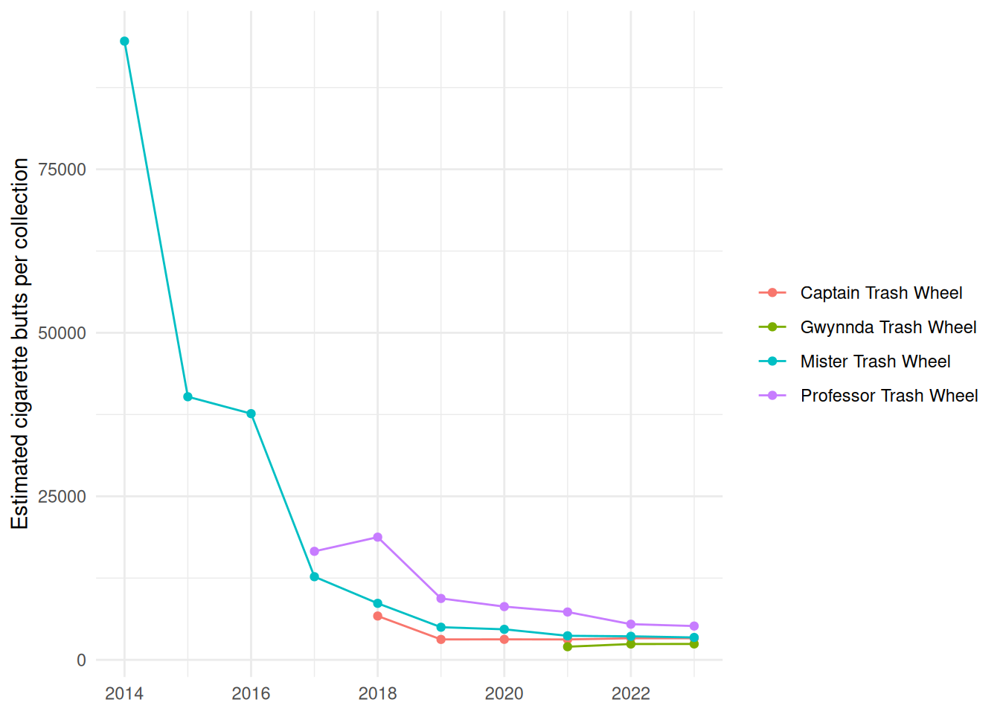

# install.packages("remotes")
remotes::install_github("ETC5523-2026/etc5523-assignment-4-kjam0022")Explore what the Trash Wheels collect
Who this guide is for
You are an analyst at a Baltimore waterway-cleanup programme and need to decide which kinds of rubbish to target. This guide shows how to install trashwheelexplorer, launch its app, use the controls, and interpret what you see, so you can answer one question:
Which types of rubbish does each Trash Wheel collect most per dumpster load, and has that changed over the years?
1. Install the package
2. Launch the app
The app opens in a window or your browser. The sidebar on the left holds the controls. The results are on the right: a chart, a list of the highest averages, a table of the numbers behind the chart, and two panels that explain the fields and how to read the results.
3. Use the controls
| Control | What it does | Tip |
|---|---|---|
| Trash Wheels | Chooses which of the four wheels to show. | Start with all four, then narrow down to compare two. |
| Rubbish types | Chooses which of the seven types to show, one chart panel each. | Start with two or three; seven panels is a lot. |
| Years | Sets the first and last year. | The wheels began in different years: Mister 2014, Professor 2017, Captain 2018, Gwynnda 2021. |
All three controls feed the same calculation, so the chart, the list and the table always agree with each other.
4. Interpret the outputs
- Chart. Each panel is one rubbish type with its own vertical scale, because some types are counted in thousands and others in single figures. Compare lines within a panel. A line above the others means that wheel collects more of that type per dumpster load. A falling line means less of that type per load over time.
- Highest average list. For each rubbish type, the wheel and year with the highest average, and how many collections it rests on.
- Table. The numbers behind the chart. Check the collections recorded column: an average based on only a few collections is less reliable.
If nothing matches your selection, the app shows a message instead of an empty chart. This happens if you untick every wheel or rubbish type, or pick years before a wheel started. Widen the years or add a wheel.
5. A worked example: has cigarette-butt litter changed?
The calculation behind the app is available as a function, summarise_trash():
library(trashwheelexplorer)
butts <- summarise_trash(trash_collections, trash_types = "Cigarette Butts")
butts |>
dplyr::filter(year %in% c(2014, 2017, 2023)) |>
dplyr::transmute(
wheel = name, year, collections,
items_per_collection = round(items_per_collection)
)
#> # A tibble: 7 × 4
#> wheel year collections items_per_collection
#> <chr> <dbl> <int> <dbl>
#> 1 Captain Trash Wheel 2023 4 3300
#> 2 Gwynnda Trash Wheel 2023 86 2428
#> 3 Mister Trash Wheel 2014 44 94591
#> 4 Mister Trash Wheel 2017 55 12709
#> 5 Mister Trash Wheel 2023 62 3421
#> 6 Professor Trash Wheel 2017 18 16590
#> 7 Professor Trash Wheel 2023 12 5167
ggplot2::ggplot(
butts,
ggplot2::aes(year, items_per_collection, colour = name)
) +
ggplot2::geom_line() +
ggplot2::geom_point() +
ggplot2::labs(
x = NULL,
y = "Estimated cigarette butts per collection",
colour = NULL
) +
ggplot2::theme_minimal()
Interpretation. Mister Trash Wheel’s average load fell from about 94,600 cigarette butts per collection in 2014 to about 3,400 in 2023. Professor Trash Wheel fell from about 16,600 in 2017 to about 5,200 in 2023. From 2019 onward, Captain and Gwynnda sit between roughly 2,000 and 3,300. Cigarette butts make up about two thirds of all items counted in the data, so a sharp fall in the load per collection matters for deciding where to focus.
Limitations. These are estimated item counts from samples, so they measure what each wheel collected, not how much rubbish is in the harbour. A falling average could mean fewer butts reaching the water, but it could also reflect changes in sampling, cleaning or weather, so this data alone cannot say why. The wheels sit in different places, so differences between wheels are not like-for-like. Averages for small years rest on few collections: Captain’s yearly averages use only three to six collections. Not every wheel records every type; for example, Gwynnda has no recorded sports balls or glass bottles, which is why the package leaves those out rather than counting them as zero.